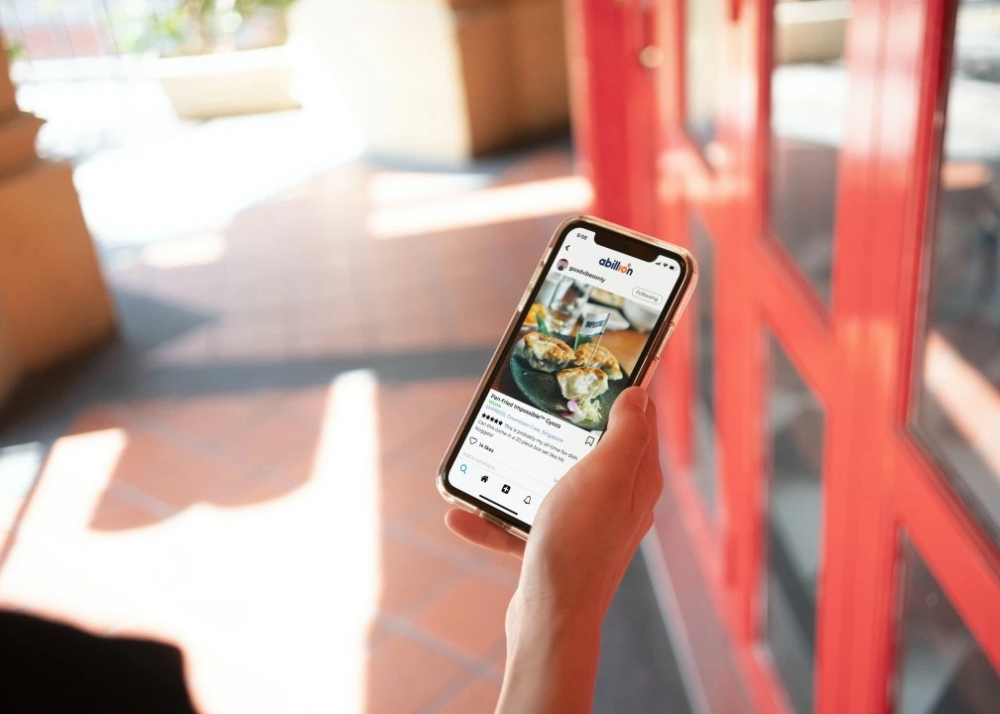

Using Online Reviews to Build Customer Relationships
The Internet has made the world one giant global village. People share their experiences by blogging, writing reviews for the places they visit, posting photos and videos. This user-generated content is a major factor in purchase decisions. Research shows that 87% of customers read online reviews and 94% of online shoppers say that they were convinced by the negative reviews to avoid visiting the business. Reviews are thoughts and opinions of consumers on how they perceive a product or a service. People post reviews on a variety of platforms like Google, TripAdvisor and Facebook, while influencers share photos and videos on their personal blogs or social media handles. Reviews don't just drive sales; they act as a digital "vote of confidence" that tells search engines and AI tools your business is trustworthy. In simple terms, the more positive reviews you have, the more likely Google and AI assistants will recommend you first to new customers.
Tor a business, reviews can be a useful tool to understand their customers. Many online review systems like TripAdvisor have curated guidelines on how businesses can respond to reviews. Responding to reviews can be time-consuming, but research shows that ratings improve when businesses respond to both positive and negative reviews.
Positive reviews are a morale booster and the restaurant should take the time to thank their customers for their kind words. Negative reviews obviously hurt, but they can help a business learn from its mistakes and improve customer satisfaction. Lack of timely response to a negative review may impact potential customers. The best thing to do with a negative review is to thank the customer for taking the time to provide valuable feedback and offer to move the conversation to a phone call or email. This way potential customers will see that the business is not pointing fingers and is willing to resolve the issue by moving onto a private platform. Responding to reviews helps the business look trustworthy and being open to feedback and friendly personalised responses can work wonders for the business.